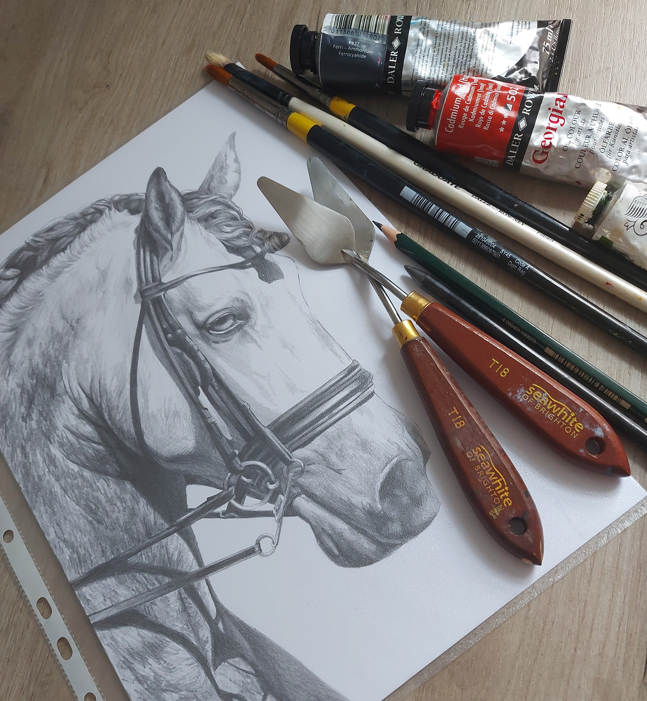

Welcome! Thank you for visiting!
I am a fine-artist who is excited to capture the character and personality in the world around us, bringing this out through the style of realism, and utilising colour and light within my work.
I enjoy creating personal pieces of work, painting elegant portraits of people's pets and animals to honour the beautiful connection we have with them.
Thank you very much for any interest in my work and I hope to be able to create an art piece that you will cherish for years to come.

Born
1997, Bolton, UK
Education
Newcastle University, Fine Art BA, 2017 - 2022
Exhibitions
Jane Doe, Ex Libris Gallery, Newcastle, 2019
None of the Above, Tyneside Cinema, Newcastle, 2018
Lime Street Gallery, Newcastle, 2017
Lifecycled, Manchester Art Gallery, Manchester, 2015
© Imogene Olive